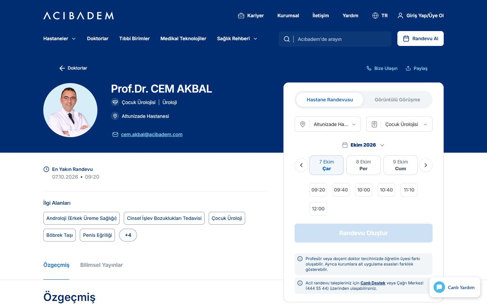
Hekim sayfasıAcıbademYön D
Klas puanı 7,5/10 Inter · lacivert #002D71 · 8/12 px köşe Lacivert iki katlı header, ikonlu hızlı işlem bandı, çizgi ikonlar. Hekim sayfasında portre, çip ilgi alanları ve sekmeli özgeçmiş.Acıbadem, Medical Park, Liv, Medicana, Memorial, Amerikan Hastanesi ve Koç Üniversitesi Hastanesi başta olmak üzere 11 Türk hastanesinin; Mayo Clinic, Cedars-Sinai, Stanford ve Mass General Brigham başta olmak üzere 17 dünya hastanesinin sitelerini ana sayfa, hekim, bölüm ve tedavi sayfalarıyla ölçtük. Bu sayfada önce o siteleri, sonra onlardan beslenen beş yeni tasarımı (D, E, F, G, H) görüyorsunuz. Hepsinde dev görsel yok: en büyük görsel hekim portresi. Önceki üç yön (A, B, C) sayfanın sonunda saklı duruyor.
Her kartta sitenin bir sayfasının ilk ekranı (hangi sayfa olduğu görselin üstünde yazılı), bizim klas puanımız, yazı ve renk dili ve beslediği yeni yön var. Bağlantılar siteyi yeni sekmede açar. Ölçüm raporları: arastirma/09 (Türkiye) ve arastirma/10 (dünya).
Türkiye: 11 hastane grubu

Hekim sayfasıAcıbademYön D
Klas puanı 7,5/10 Inter · lacivert #002D71 · 8/12 px köşe Lacivert iki katlı header, ikonlu hızlı işlem bandı, çizgi ikonlar. Hekim sayfasında portre, çip ilgi alanları ve sekmeli özgeçmiş.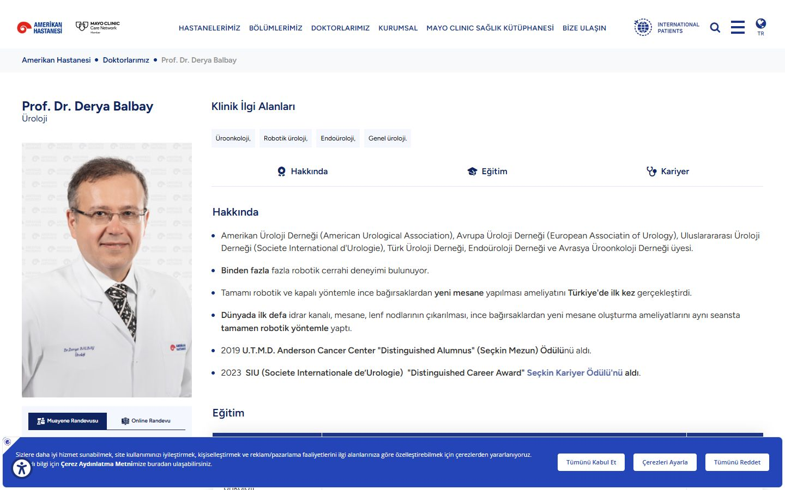
Hekim sayfasıAmerikan HastanesiYön E
Klas puanı 7/10 Figtree · lacivert #1D3587 · köşesiz Köşesiz ve gölgesiz yüzeyler, 2×2 hızlı işlem kareleri. Hekim künyesi 4/8 düzende, Uzmanlık / Kurum / Yıl tablosu.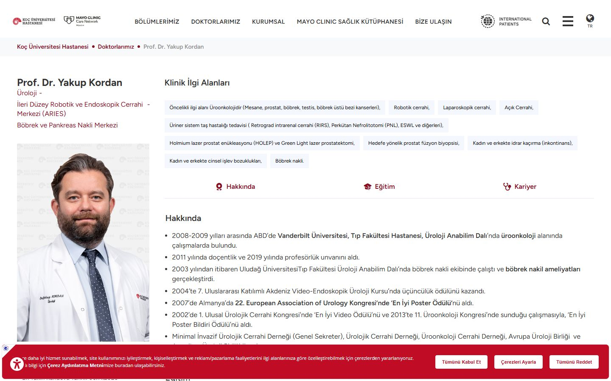
Hekim sayfasıKoç Üniversitesi HastanesiYön E
Klas puanı 7/10 Figtree · bordo #890D21 · köşesiz Amerikan Hastanesi ile aynı şablonun bordo hali. Tedavi sayfasında "Yazan / Onaylayan" satırı.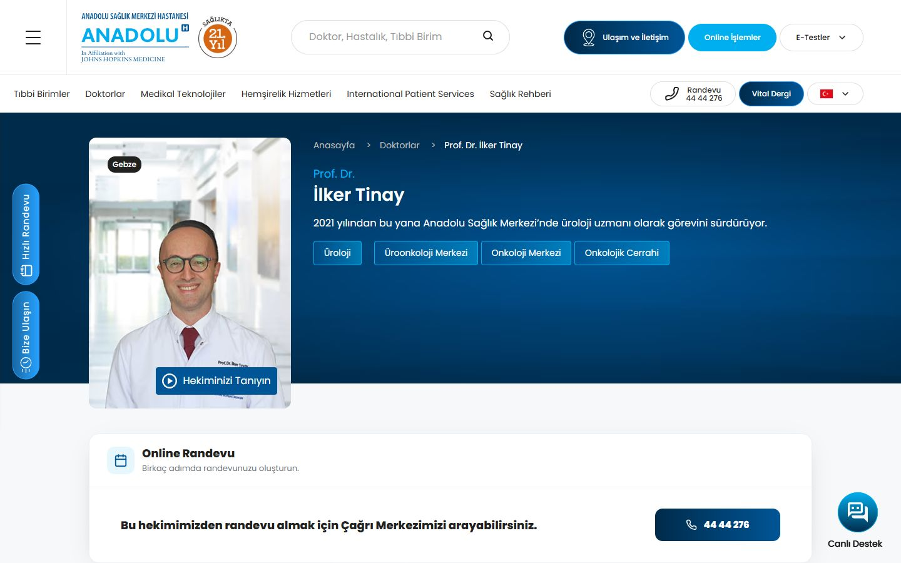
Hekim sayfasıAnadolu Sağlık MerkeziYön G
Klas puanı 6,5/10 Poppins · mavi #005596 · hap düğme Yuvarlatılmış portre kartı, ikonlu sekme kartı. Hekim sayfasında videolar, basın ve doktor yazıları.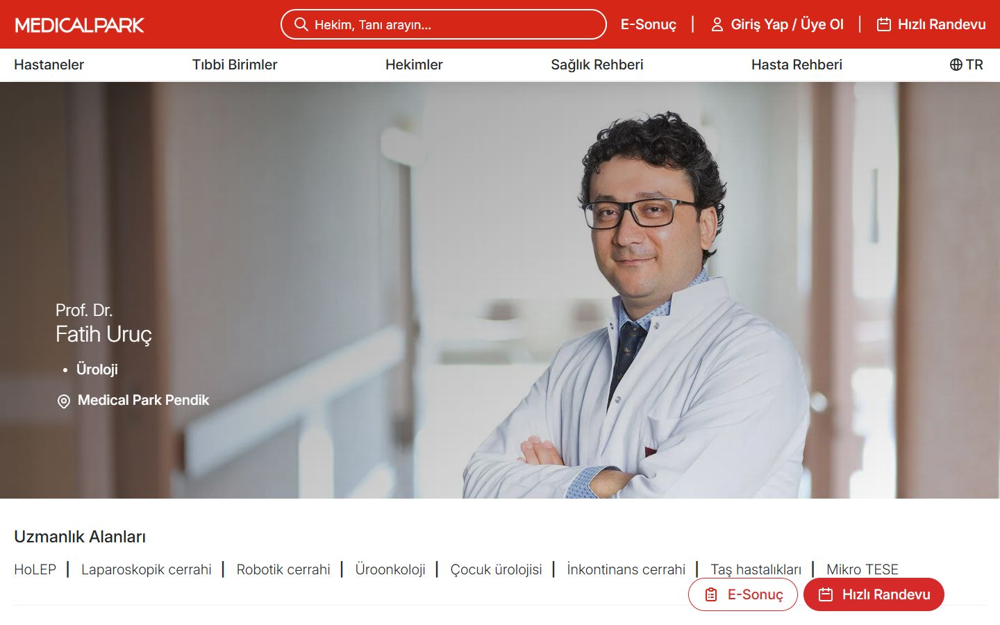
Hekim sayfasıMedical ParkYön F
Klas puanı 6/10 Inter 300 · grafit + kırmızı · 4 px İnce başlıklar, sıcak kırık beyaz zemin, alt çizgili sekmeler. Ana sayfadaki tam ekran slayt alınmadı.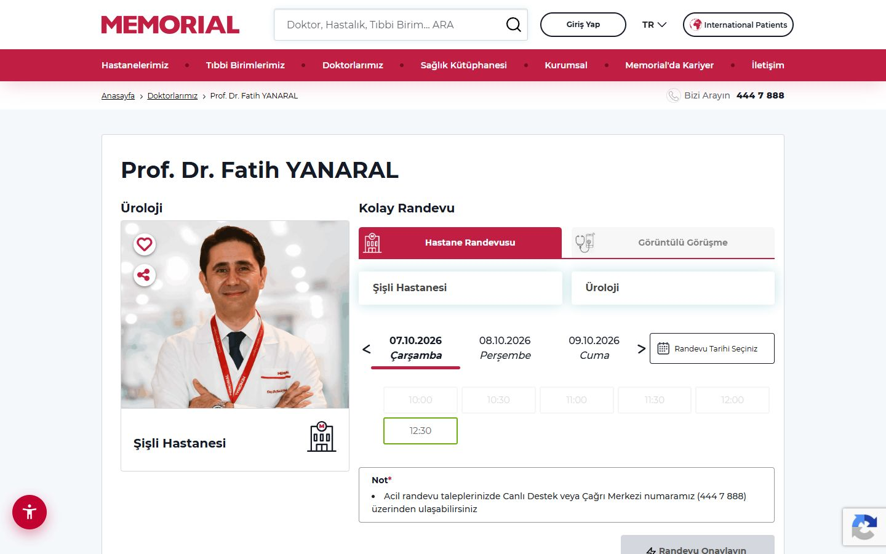
Hekim sayfasıMemorialYön H
Klas puanı 5,5/10 Montserrat · ahududu #C11E43 · 4 px İki katlı header ve renkli menü bandı, "Hızlı Erişim" kutuları. Hekim kartında Hastalıklar / Tedavi yöntemleri listesi.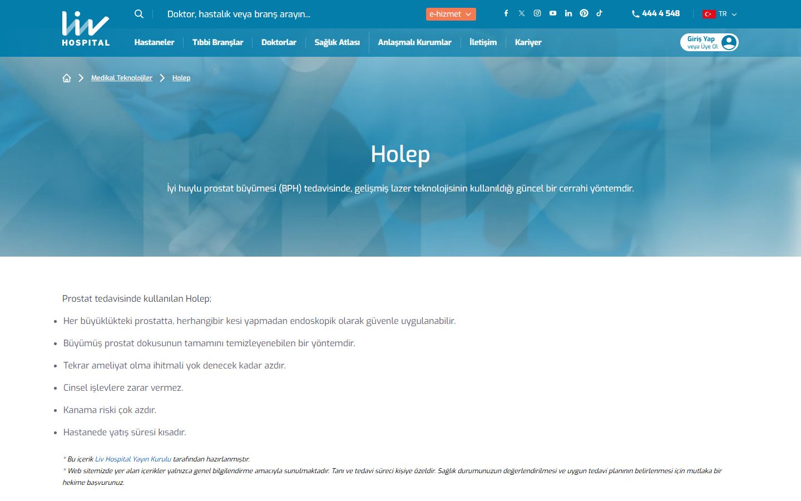
Tedavi sayfasıLiv HospitalYön G
Klas puanı 5,5/10 Exo · camgöbeği #057DAB · 8/16 px Su mavisi yüzeyler, yapışkan sol panel ve dar okuma sütunu. Ana sayfadaki tam ekran slayt alınmadı.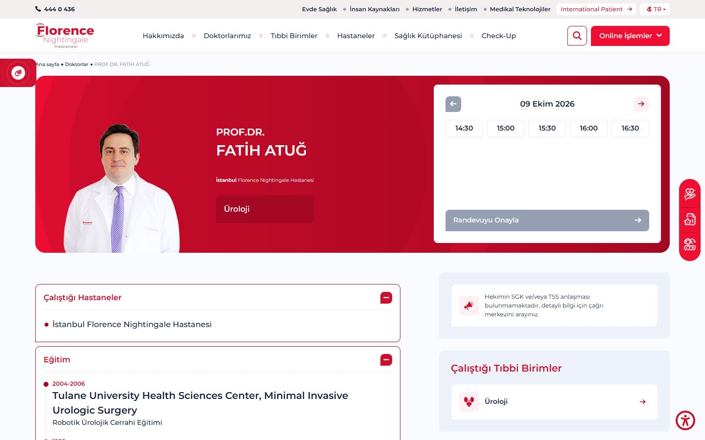
Hekim sayfasıFlorence Nightingale
Klas puanı 5/10 Montserrat · kırmızı #CD0E2D · 8 px Numaralı metin slaytı, akordeonlu özgeçmiş, sağ sütunda oklu içindekiler.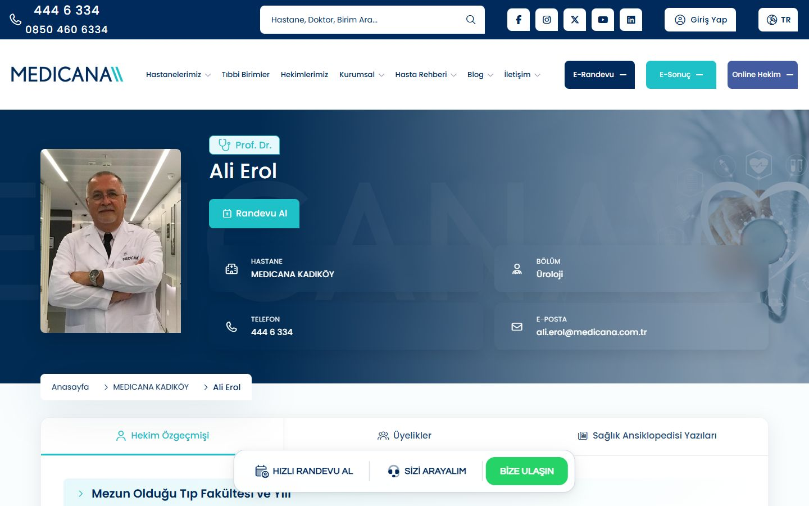
Hekim sayfasıMedicanaYön D
Klas puanı 5/10 Poppins · lacivert #002A5C · 8 px Hekim sayfasında dört bilgi kutusu (Hastane / Bölüm / Telefon / E-posta). Gölge kullanımı yoğun.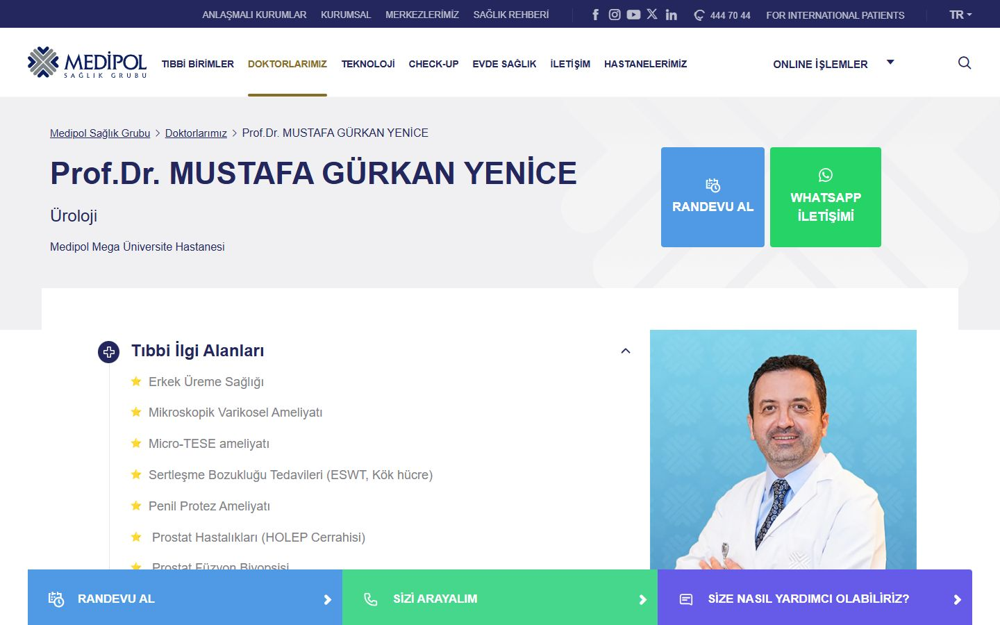
Hekim sayfasıMedipol
Klas puanı 4,5/10 Arial · çivit #23275E · 0-4 px 50/50 bölünmüş bantlar ve "Doktorunuz Anlatıyor" video modülü. Çok renkli düğmeler klası bozuyor.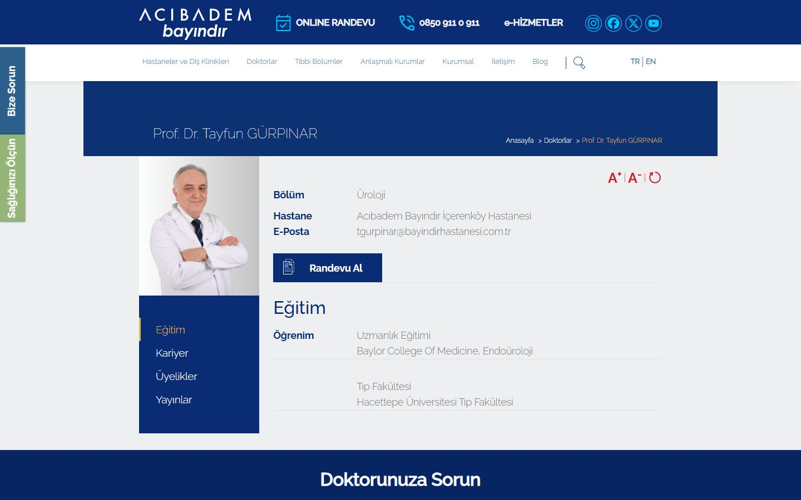
Hekim sayfasıAcıbadem Bayındır
Klas puanı 4/10 Museo Sans · lacivert #092C74 · köşesiz Ölçülü görsel ve dekupe hekim portresi, etiket / değer satırlı künye.Dünya: 17 hastane
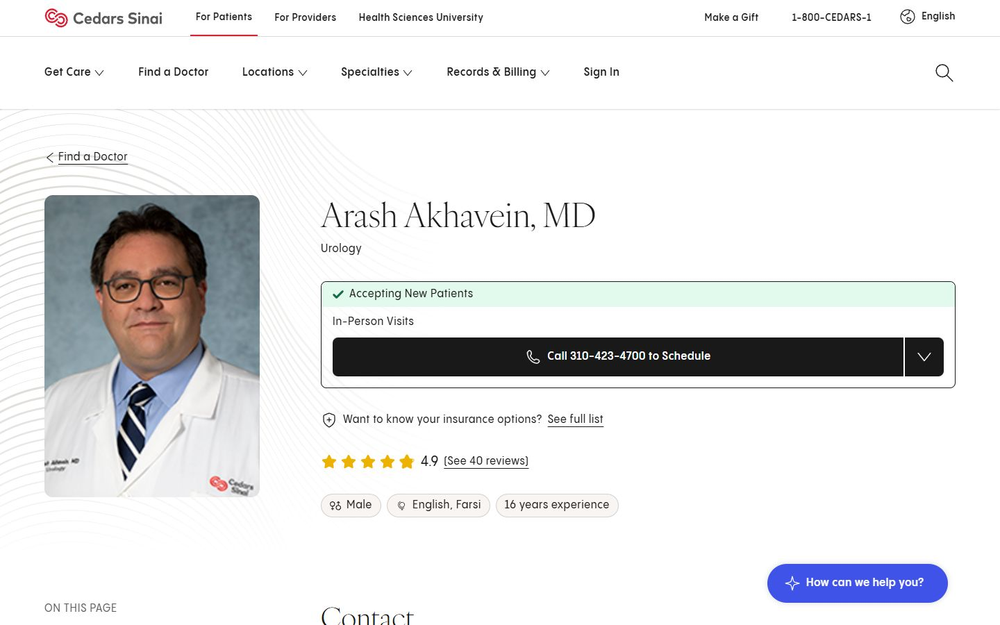
Hekim sayfasıCedars-SinaiYön F
ABD · Klas puanı 9,5/10 IvyOra serif 300 + sans · kahve #472C29 · 8 px Hekim sayfasında dikey portre, durum kutusu, hap etiketler, "Bu sayfada" listesi ve eğitim zaman çizelgesi.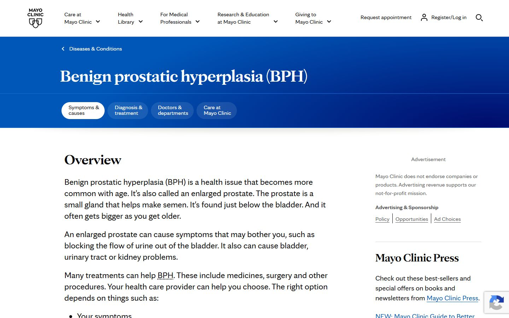
Tedavi sayfasıMayo ClinicYön D
ABD · Klas puanı 9/10 Mayo serif + sans · mavi #0057B8 · hap sekme Hastalık sayfasında renkli bant, serif başlık ve hap sekmeler. Hekim profilinde künye listesi ve 4:5 portre.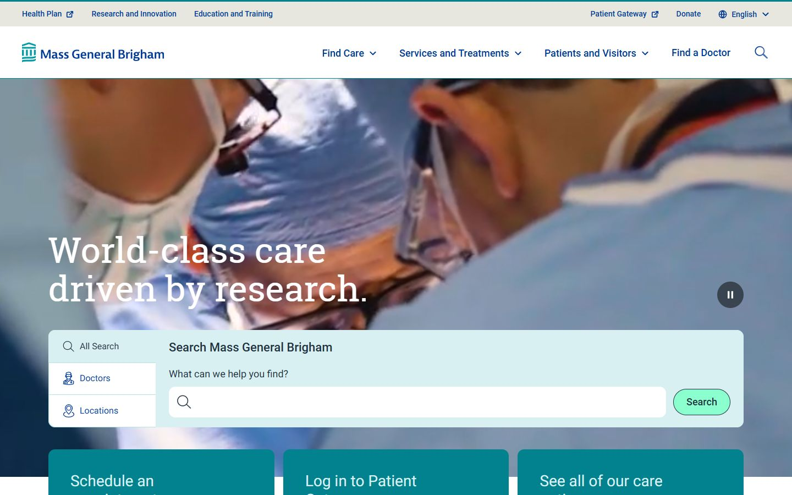
Ana sayfaMass General BrighamYön G
ABD · Klas puanı 8/10 Roboto Slab + Roboto · lacivert, teal, nane · 12 px Bölünmüş giriş: düz renk metin paneli ve ölçülü fotoğraf. Nane bantlar, hap düğmeler.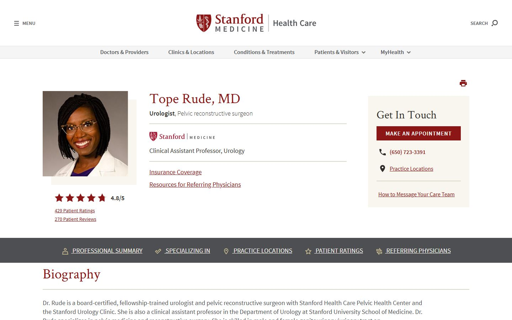
Hekim sayfasıStanford Health CareYön E
ABD · Klas puanı 8/10 Crimson Text + Source Sans · kardinal #8C1515 · köşesiz Hekim sayfasında kâğıt tonlu "Get in touch" adası, koyu çapa şeridi ve "Specializing in" bandı.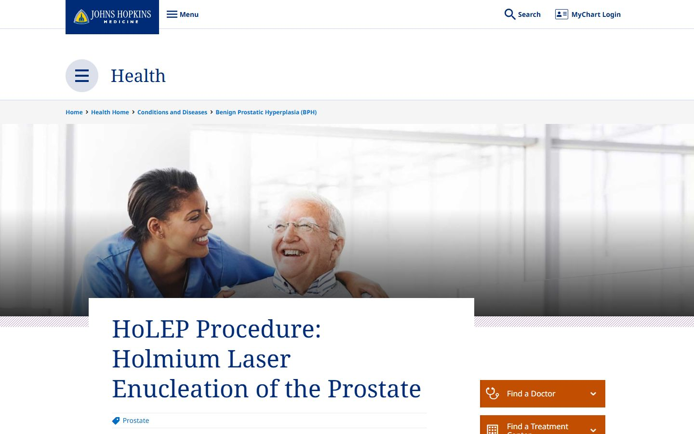
Tedavi sayfasıJohns Hopkins MedicineYön E
ABD · Klas puanı 7,5/10 Noto Serif + Noto Sans · lacivert #002D74 · köşesiz Tedavi sayfasının başında "What you need to know" özet kutusu. Hekim profili bot koruması yüzünden açılmadı.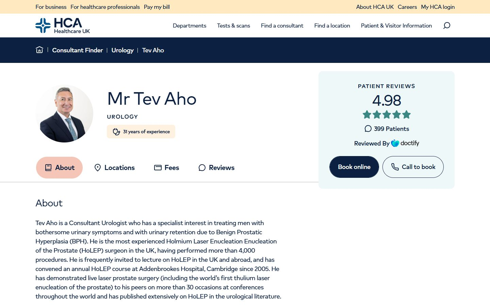
Hekim sayfasıHCA Healthcare UK
Birleşik Krallık · Klas puanı 7,5/10 Mark · lacivert + şeftali · hap 48 px Şeftali zemin, hap düğmeler, iç sayfalarda yarım genişlik kavisli görsel.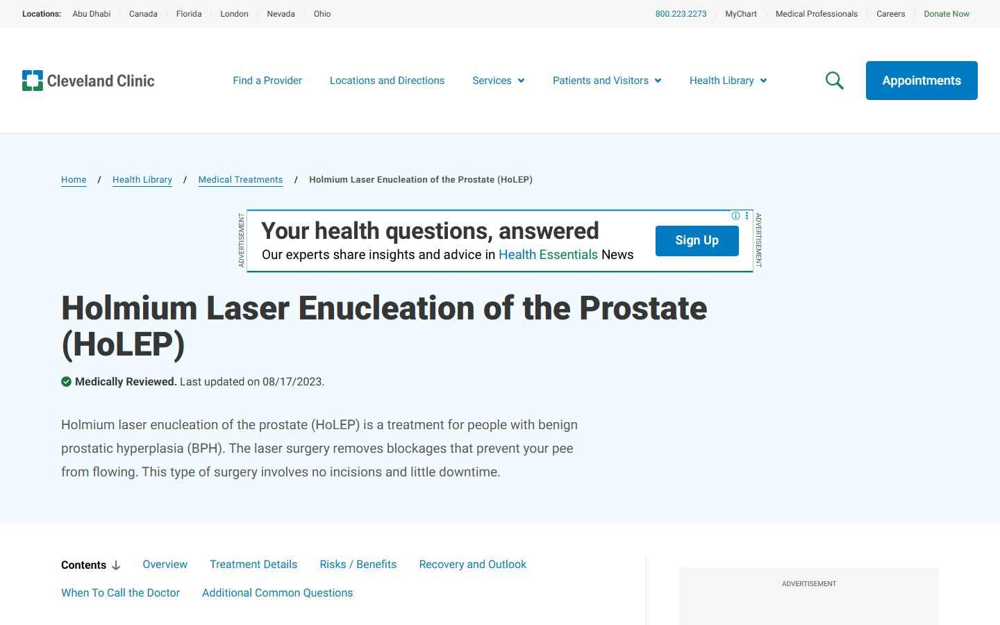
Tedavi sayfasıCleveland Clinic
ABD · Klas puanı 7/10 Roboto · mavi #007BC2 · 5 px Soru biçimli başlıklar ve "Medically reviewed, last updated" satırı.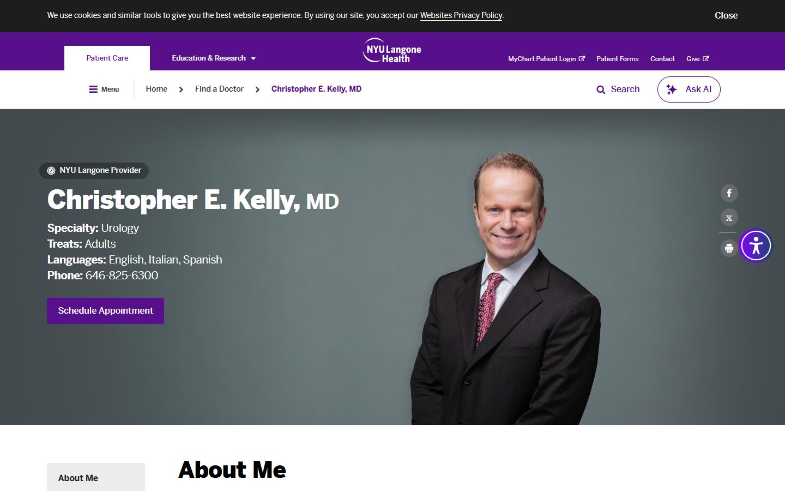
Hekim sayfasıNYU Langone Health
ABD · Klas puanı 7/10 Sharp Grotesk + Georgia · mor #580F8B · 24 px Okuma metninde Georgia serif, hekim sayfasında yazar ve dergi satırlı yayın listesi.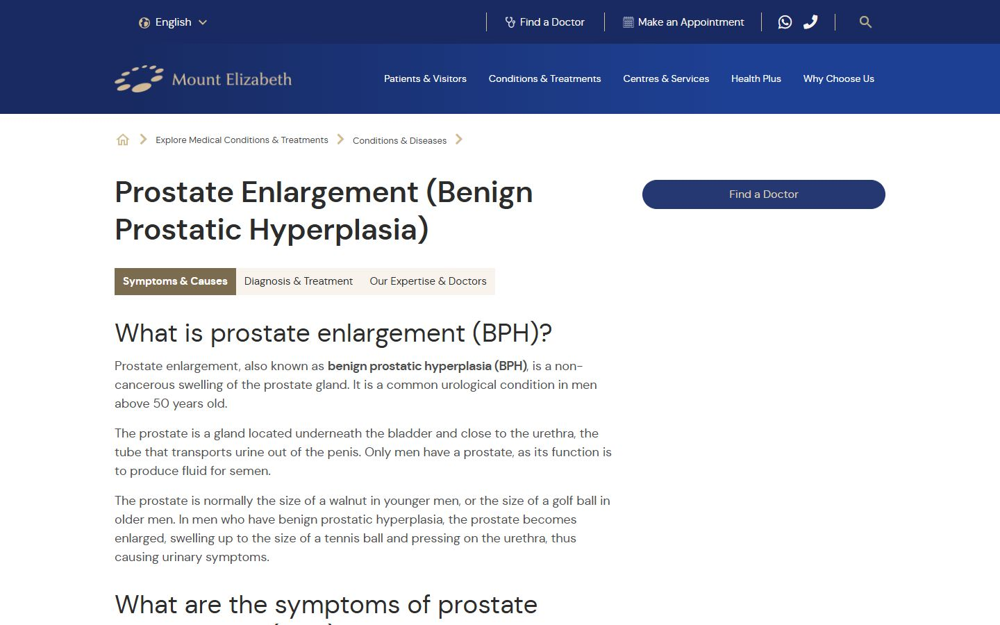
Tedavi sayfasıMount ElizabethYön H
Singapur · Klas puanı 7/10 DM Sans · lacivert + kum + krem · hap Lacivert, kum ve krem paleti; hastalık sayfasında sekmeler ve şerit başlık.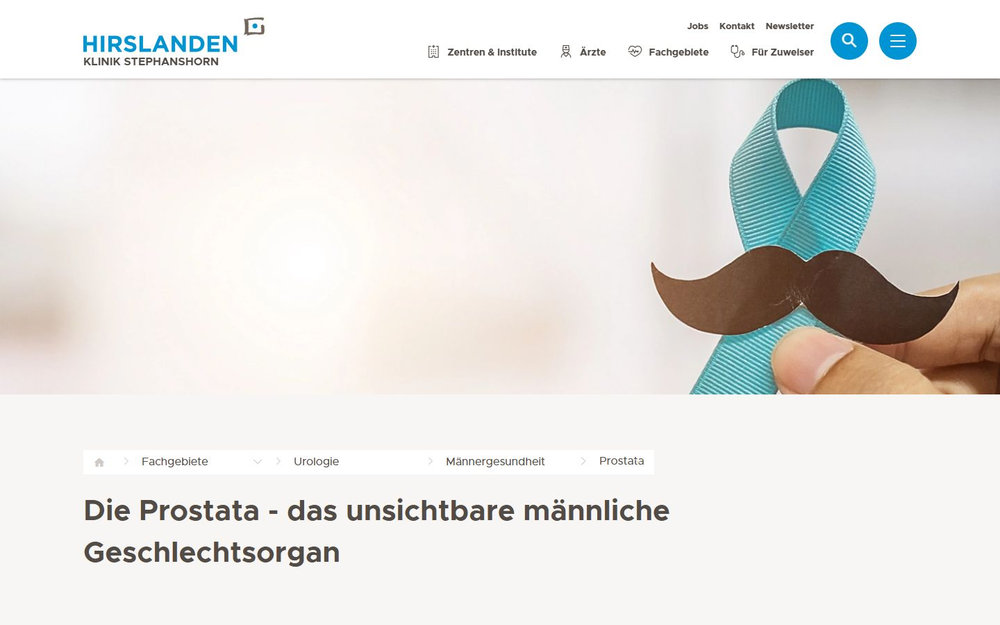
Tedavi sayfasıHirslanden
İsviçre · Klas puanı 7/10 Metropolis · sıcak gri · köşesiz Sakin İsviçre kurumsal dili; ana sayfada dev fotoğraf var, iç sayfalar ölçülü.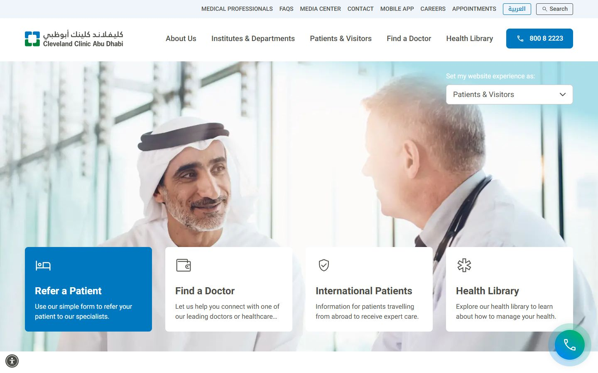
Ana sayfaCleveland Clinic Abu Dhabi
BAE · Klas puanı 7/10 Roboto · mavi #0078BF · 8 px Girişe binen dört hızlı işlem kartı ve hap sekmeler.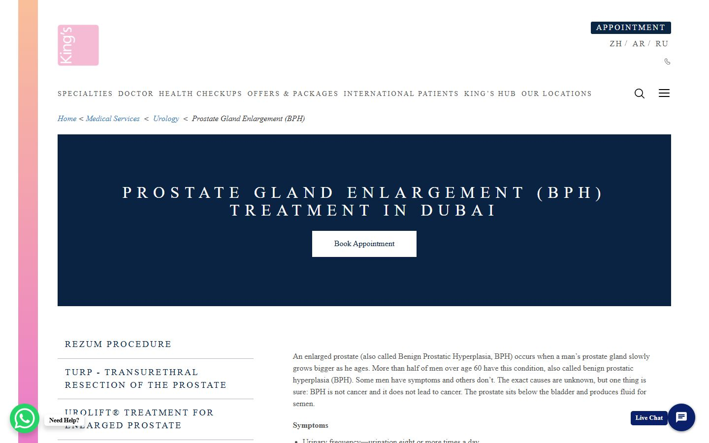
Tedavi sayfasıKing's College Hospital DubaiYön H
BAE · Klas puanı 6/10 Gill Sans + Baskerville italik · lacivert + bej · köşesiz Tipografik lacivert başlık blokları ve italik unvan satırları. Pop-up ölçümü kısıtladı.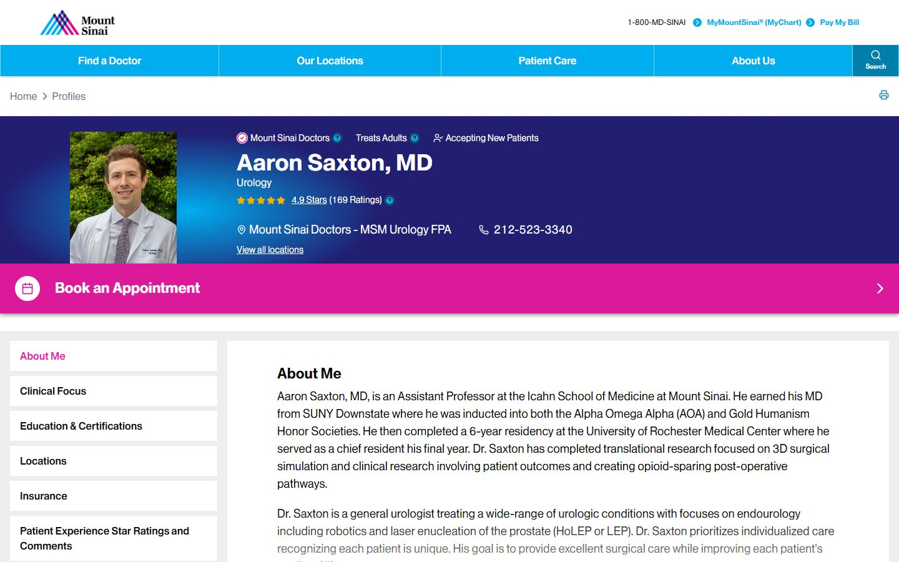
Hekim sayfasıMount Sinai
ABD · Klas puanı 6,5/10 Mount Sinai Sans ince · camgöbeği + magenta · köşesiz İnce ağırlıklı başlıklar, dar slayt ve kalabalık hekim profili.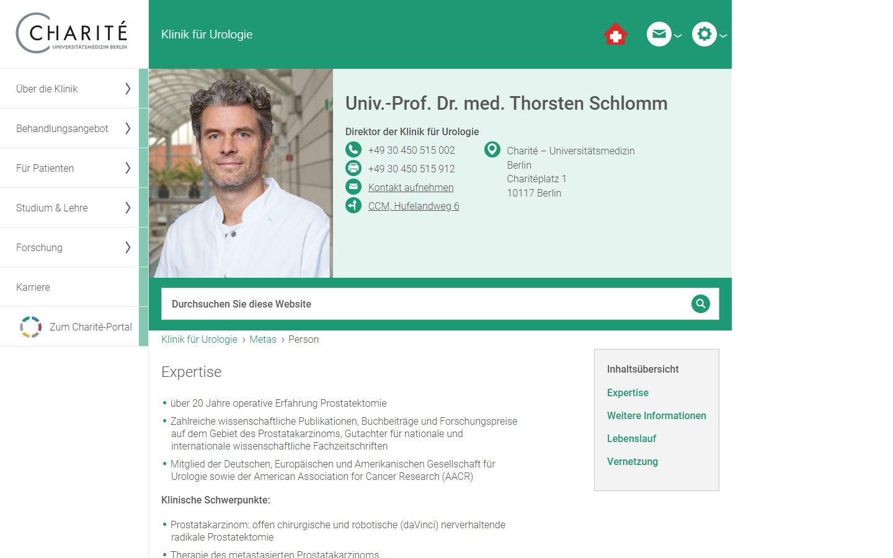
Hekim sayfasıCharité Berlin
Almanya · Klas puanı 6,5/10 Roboto 300 · gri + klinik yeşili · köşesiz Sol sabit menülü akademik ve sade üniversite hastanesi düzeni.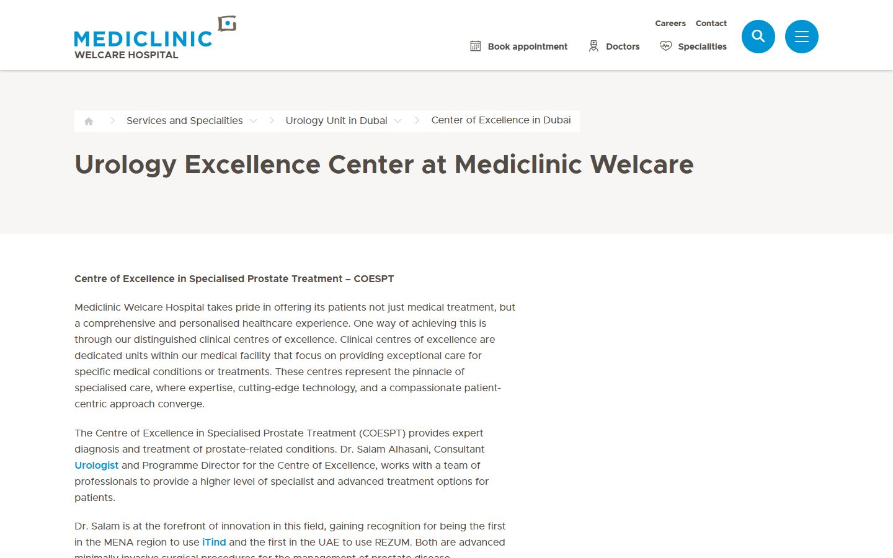
Tedavi sayfasıMediclinic Middle East
BAE · Klas puanı 6,5/10 Metropolis · sıcak gri + camgöbeği · köşesiz Hirslanden ile aynı sistem; ana sayfada dev görsel.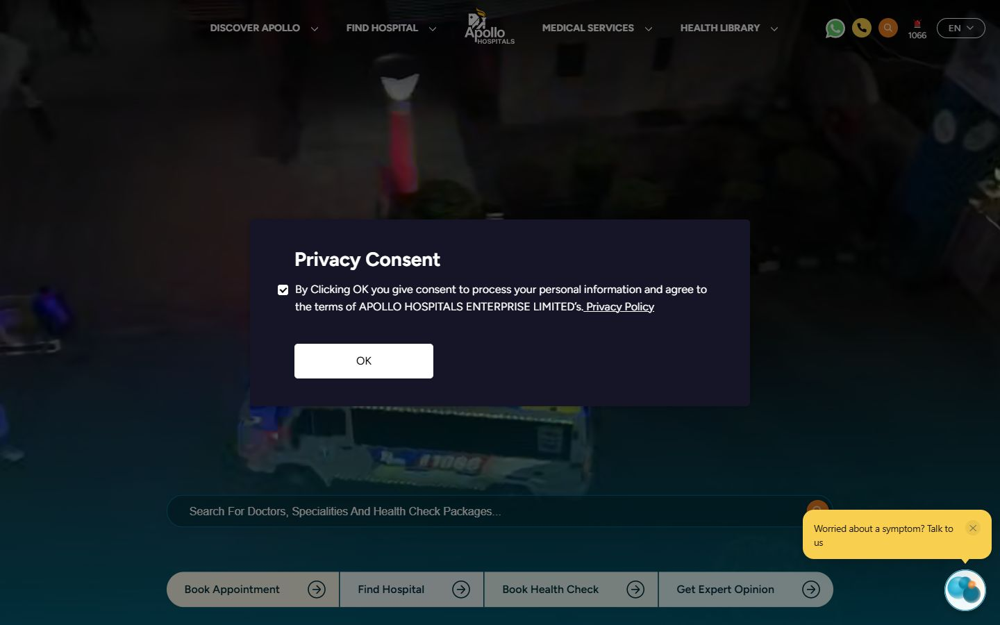
Ana sayfaApollo Hospitals
Hindistan · Klas puanı 4,5/10 Figtree + Roboto · koyu teal · 16 px Tam ekran video ve çok renkli karolar. Klası bozan örnek olarak listede.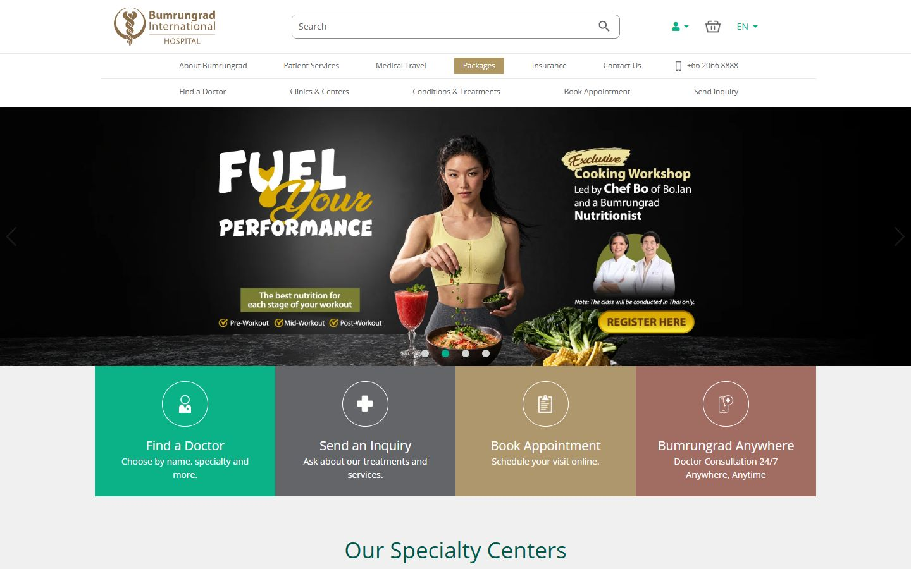
Ana sayfaBumrungrad
Tayland · Klas puanı 4/10 Open Sans · yeşil #0BB288 · 3,5 px Reklam slaytı ve fiyatlı paket kartları. Klası bozan örnek olarak listede.Acıbadem ve Mayo Clinic çizgisi
Türkiye'nin en kurumsal hastane sitesinin netliği: lacivert header ve künye bandı, çizgi ikonlu hızlı erişim kutuları, düzenli konu kartları. Hekimin kim olduğu, nerede muayene ettiği ve hangi konularda yazdığı ilk ekranda okunur.
Kime hitap eder: Hastane sitelerine alışkın 45 yaş üstü hasta ve yakınları; büyük hastane sitesindeki güveni kişisel sitede de arayan okur.
Dikkat: En tanıdık yön, ayrışma gücü en düşük olanı. Fark tipografi, boşluk disiplini ve içerik derinliğinden gelir.
Onest
Beslendiği referanslar: Acıbadem hekim sayfası · Mayo Clinic hastalık sayfası · Medicana hekim sayfası
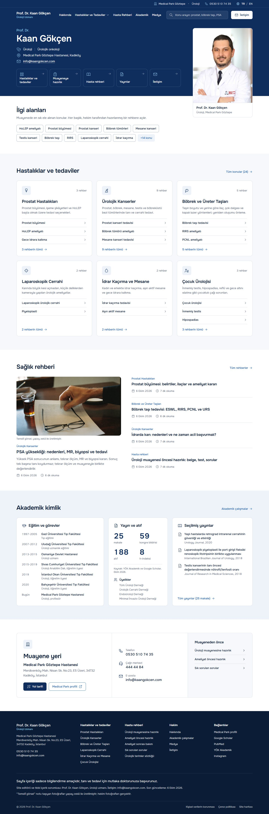
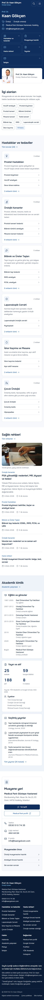
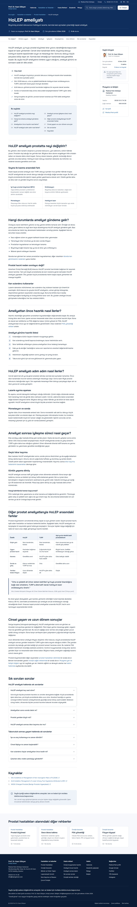
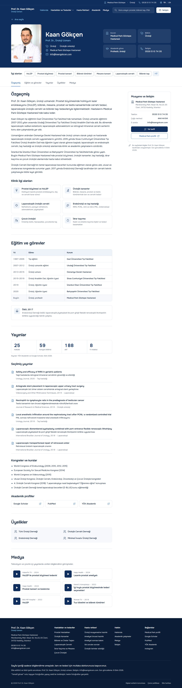
Koç Üniversitesi Hastanesi, Amerikan Hastanesi ve Stanford çizgisi
Üniversite hastanesi ağırbaşlılığı: köşesiz yüzeyler, ince çizgiler ve tablolar, tek bordo vurgu. Stanford hekim sayfasındaki gibi portre, künye ve kâğıt tonlu iletişim adası yan yana durur.
Kime hitap eder: Sevk eden meslektaşlar, akademik kimliği önemseyen okur, ikinci görüş arayan hasta.
Dikkat: Serif başlık ve tablolar fazla resmi durabilir; mobilde tablolar kendi kutusunda kayar.
SpectralLibre Franklin
Beslendiği referanslar: Stanford hekim sayfası · Koç Üniversitesi Hastanesi hekim sayfası · Amerikan Hastanesi hekim sayfası · Johns Hopkins HoLEP sayfası
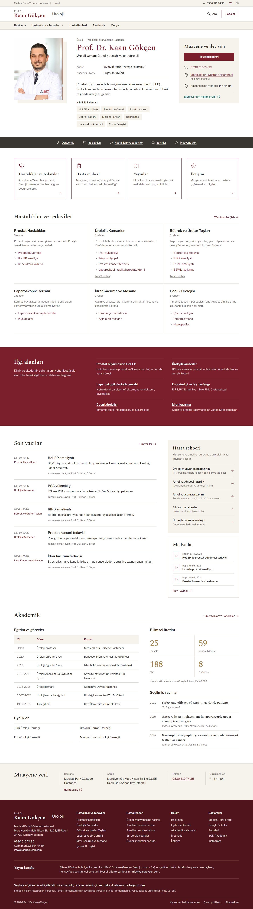

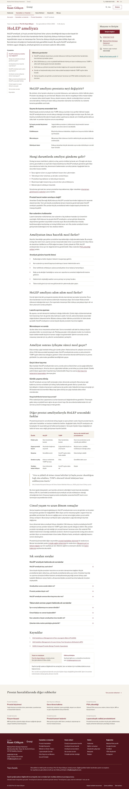
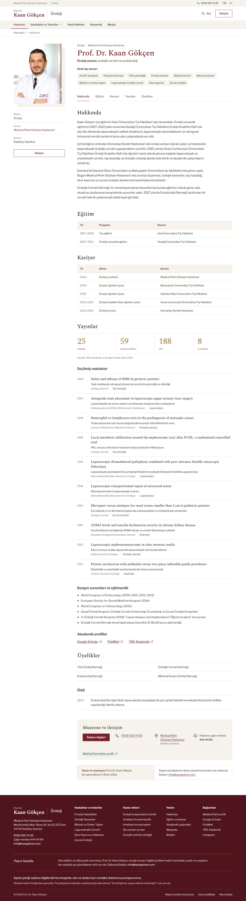
Medical Park ve Cedars-Sinai çizgisi
Metin öncelikli sakin lüks: ince ağırlıklı başlıklar, sıcak kırık beyaz zemin, 1 px çizgiler. Cedars-Sinai hekim sayfasındaki dikey portre, muayene kutusu ve eğitim zaman çizelgesi alındı. Hekimin çalıştığı Medical Park ile aile bağı kurar, dev slaytını almaz.
Kime hitap eder: Araştıran ve karşılaştıran okur; Medical Park'tan yönlenen hasta.
Dikkat: İnce başlıklar düşük kaliteli ekranda zayıf kalabilir; bu yüzden gövde metni normal ağırlıkta tutuldu.
Red Hat DisplayRed Hat Text
Beslendiği referanslar: Cedars-Sinai hekim sayfası · Medical Park hekim sayfası · Medical Park HoLEP rehberi
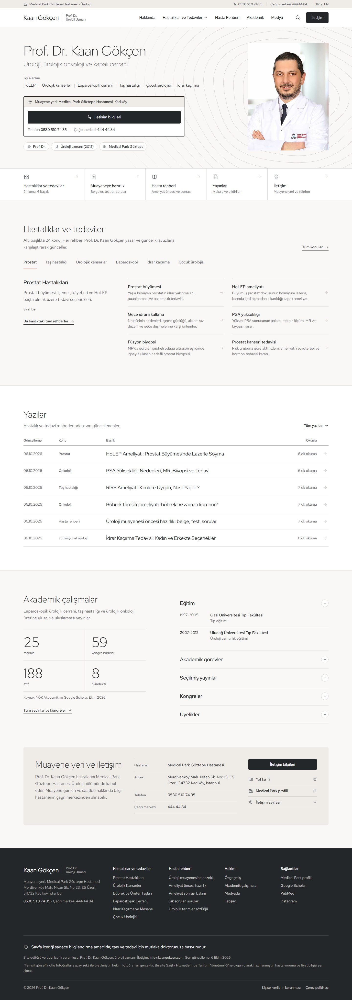
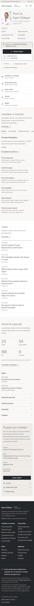
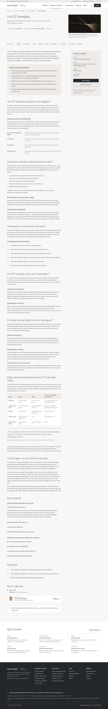
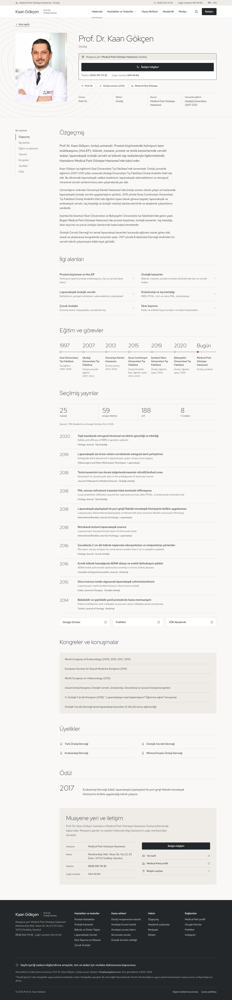
Mass General Brigham, Liv ve Anadolu Sağlık çizgisi
Çağdaş uluslararası hastane dili: düz renk petrol panel ve yanında ölçülü fotoğraf, nane bantlar, yumuşak köşeler, yuvarlak ikonlu kısayollar. Videolar ve basın görünür yerde.
Kime hitap eder: 60 yaş üstü okur dahil geniş kitle; videodan gelen ziyaretçi; yurt dışından gelen hasta.
Dikkat: Fotoğrafa en çok yer veren yön (yarım genişlik); hekim çekiminin kalitesi belirleyici.
Zilla SlabAlbert Sans
Beslendiği referanslar: Mass General Brigham üroloji · Anadolu Sağlık hekim sayfası · Liv Hospital HoLEP
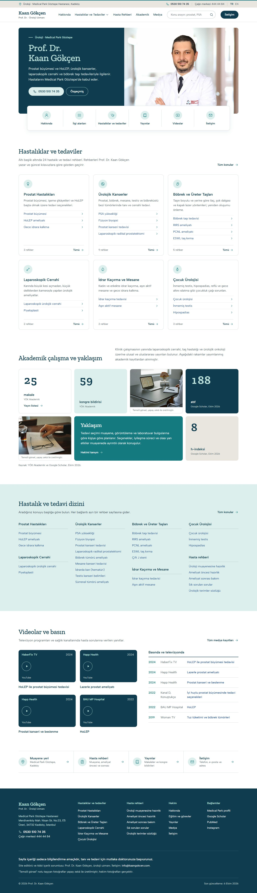
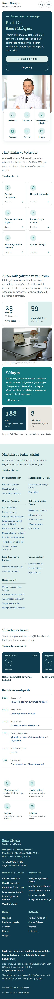
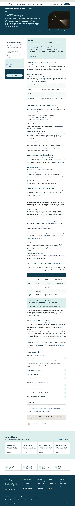
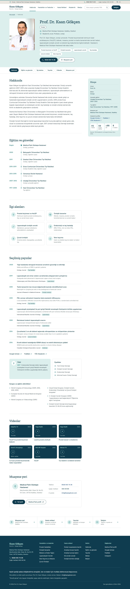
King's College Hospital Dubai, Mount Elizabeth ve Memorial çizgisi
Londra özel kliniği ağırbaşlılığı: gece laciverti menü bandı, kum ve krem tonları, kare köşeler, italik serif unvan satırları. Giriş görselsiz ve tipografik; portre ikinci bölümde gelir.
Kime hitap eder: Kişisel ilgi ve prestij arayan okur, yurt dışından gelen hasta, basın.
Dikkat: Görseli en az olan yön; içeriği ve tipografiyi taşımak zorunda.
Libre BaskervilleMulish
Beslendiği referanslar: King's College Hospital Dubai üroloji · Mount Elizabeth hastalık sayfası · Memorial hekim sayfası
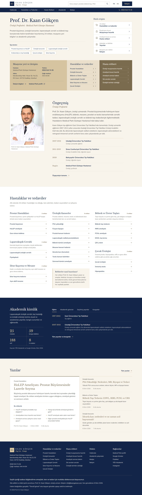
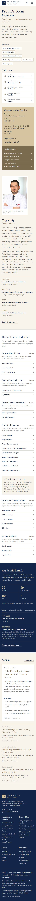
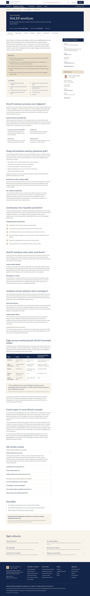
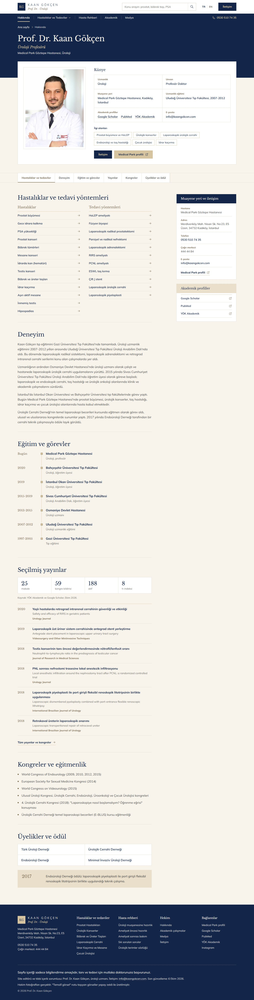
Petrol yeşili, serif başlıklar, portreli giriş
Büyük hekim portreli giriş, beş kısayol, altı alanlı hastalık satırı, koyu petrol HoLEP bandı, özgeçmiş ve akademik kimlik yan yana, yazı kartları ve iletişim şeridi. Klasik serif yazı ve petrol yeşiliyle sakin, güven veren bir dil.
Kime hitap eder: Geniş hasta kitlesi; hekimi önce yüzüyle tanımak isteyen okur.
Dikkat: Girişte büyük portre kullanılıyor; hekim çekiminin kalitesi belirleyici.
Source Serif 4
Beslendiği referanslar:
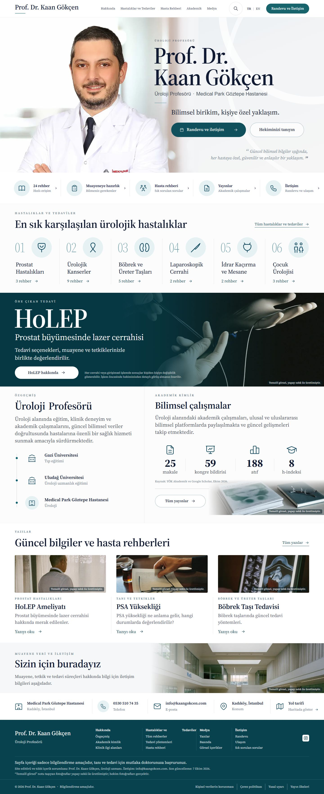
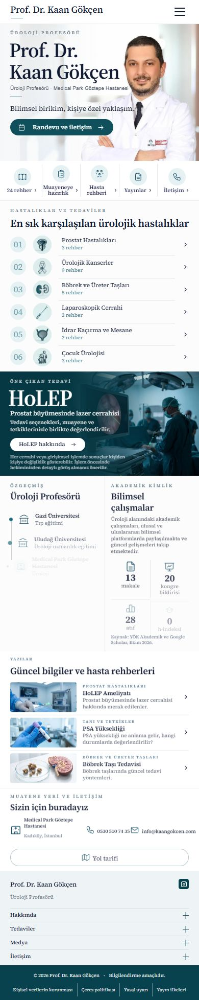
Krem zemin, lacivert başlıklar, altın vurgular
Portreli giriş, altın serif soyadı ve italik alıntı; konu kartları, ince çizimli koyu HoLEP bandı, portreli özgeçmiş ve metrikler, yazı kartları, altın "Yol tarifi" düğmeli iletişim şeridi. Özel klinik ağırbaşlılığı.
Kime hitap eder: Prestij ve kişisel ilgi arayan okur, yurt dışından gelen hasta.
Dikkat: Altın vurgu fazla kullanılırsa gösterişli durabilir; ölçülü tutuldu.
Playfair DisplayDM Sans
Beslendiği referanslar:
Koyu lacivert giriş, camgöbeği vurgular, sans başlıklar
Koyu gece mavisi girişte büyük sans başlık ve hekim portresi, ikonlu kısayollar, HoLEP kartıyla birlikte iki sütunlu hastalık listesi, açık mavi zeminde özgeçmiş ve metrikler, görselli yazı kartları. Çağdaş ve teknolojik bir hastane dili.
Kime hitap eder: Genç ve orta yaş, dijital kanallardan gelen okur.
Dikkat: Koyu ve parlak mavi tonlar klinik ciddiyeti yer yer gölgeleyebilir.
Plus Jakarta Sans
Beslendiği referanslar:
| D · Lacivert Künye | E · Bordo Akademi | F · İnce Çizgi | G · Petrol Panel | H · Lacivert ve Kum | |
|---|---|---|---|---|---|
| Beslendiği | Acıbadem, Mayo Clinic, Medicana | Koç Üniv. Hastanesi, Amerikan Hastanesi, Stanford, Johns Hopkins | Medical Park, Cedars-Sinai | Mass General Brigham, Liv, Anadolu Sağlık | King's College Hospital Dubai, Mount Elizabeth, Memorial |
| His | En kurumsal, tanıdık hastane dili | Akademik, ağırbaşlı | Sakin lüks, metin öncelikli | Çağdaş, sıcak, erişilebilir | Prestijli özel klinik |
| Renk | Lacivert, bağlantı mavisi, buz | Bordo, kemik, pirinç | Grafit, sıcak beyaz, kiremit | Koyu petrol, nane | Gece laciverti, kum, krem |
| Yazı | Onest | Spectral + Libre Franklin | Red Hat Display + Red Hat Text | Zilla Slab + Albert Sans | Libre Baskerville + Mulish |
| Köşe | 8 / 12 px | Köşesiz | 4 px, hap etiket | 12 px, hap düğme | Köşesiz |
| Ana sayfa girişi | Lacivert künye bandı, taşan portre kartı, ikonlu hızlı erişim | Portre, künye ve kâğıt tonlu iletişim adası yan yana | İnce başlık, ilgi alanı satırı, muayene kutusu, dikey portre | Petrol panel ve yarım genişlik fotoğraf, ikonlu sekme kartı | Görselsiz tipografik giriş, hızlı erişim kutuları, kum şerit |
| En güçlü olduğu okur | 45 yaş üstü hasta ve yakını | Sevk eden hekim, ikinci görüş | Araştıran okur, Medical Park hastası | Geniş kitle, video izleyicisi | Prestij arayan okur, yurt dışı hasta |
Bir yön seçtiğinizde (ya da iki yönden parça birleştirmemizi istediğinizde) sitenin tamamını o yönle kodlarız: yaklaşık 36 sayfa, menü, tedavi dizini, hasta rehberi, akademik ve medya sayfaları. Ardından WordPress ve Klasik Editör kurulumu gelir.
Bu sayfadaki "temsilî" görseller yapay zekâ ile üretilmiştir; hekim fotoğrafı gerçektir. Siteler noindex olarak hazırlanmıştır.
Aşağıdaki A, B ve C yönleri ilk turda çizildi ve beğenilmedi; istek üzerine silinmedi. Bireysel hekim siteleri ve premium sağlık markalarından derlenen 51 örnek de burada.
Her kartta sitenin ilk ekranı, bağlantısı ve bizim notumuz var. Kartlara tıklayınca site yeni sekmede açılır.
Türkiye: rakip ürologlar ve hekim siteleri
Dünya: bireysel hekim siteleri
Premium sağlık markaları ve konsültan sayfaları
Ana sayfa, Hakkında, Akademik, Medya, Tedaviler, Hasta Rehberi ve İletişim; altı alanda 24 tedavi ve hastalık rehberi ile 5 hasta rehberi. Toplam yaklaşık 36 sayfa. Her rehber 1.000 kelimenin üzerinde, kaynaklı ve hekim imzalı. Seçilecek yön hangisi olursa olsun bu harita aynı kalır.
Klasik kurumsal güven
Bir üniversite hastanesinin profesör sayfası kadar düzenli: hekimin kim olduğu, ne yaptığı ve nerede çalıştığı ilk bakışta, kanıtıyla okunur. Bilgiler kutu yerine ince çizgilerle ayrılır, renk yalnız çizgide ve kelimede.
Kime hitap eder: 55 yaş üstü prostat, taş ve onkoloji hastaları; sevk eden meslektaşlar; "bu hekim gerçekten kim?" diye bakan okur.
Dikkat: Fotoğraf zayıf kalırsa sıradan bir "hastane sitesi" gibi durabilir; çekim günü önemli.
Libre Caslon DisplayLibre Caslon TextPublic Sans
Beslendiği referanslar: Mayo Clinic hekim sayfası · HCA, Mr Tev Aho profili · The London Clinic · Function Health
Modern premium, editoryal
Uzmanlık bir dergi kapağı ve monografi gibi okunur: büyük tipografi, az renk, derin içerik. Koyu sahneler yalnız giriş ve bölüm geçişlerinde; uzun metin her zaman açık zeminde.
Kime hitap eder: Araştıran ve karşılaştıran 35-60 yaş okur, yurt dışından gelen hasta, basın ve program yapımcıları.
Dikkat: En şık ama en kırılgan yön; okunurluk ve fotoğraf kalitesine bağımlı.
Bodoni ModaHanken Grotesk
Beslendiği referanslar: Function Health · Lanserhof · Neko Health · Clinique La Prairie
Sıcak, insani, sakin
Siteye giren kişi güneş alan bir muayene odasına girmiş gibi hisseder. Ziyaretçi teşhisle değil şikâyetiyle başlar: "Gece sık idrara kalkıyorum", "PSA değerim yüksek çıktı".
Kime hitap eder: Kaygılı ilk başvuru, ürologa gitmeyi erteleyen erkekler, eşleri ve yetişkin çocukları, çocuk ürolojisi için aileler.
Dikkat: "Fazla yumuşak" durup akademik ağırlığı kaybedebilir; Hakkında ve Akademik sayfaları bu yüzden derli toplu kurulur.
Young SerifCommissioner
Beslendiği referanslar: One Medical · HCA Healthcare UK · Neko Health · The London Clinic